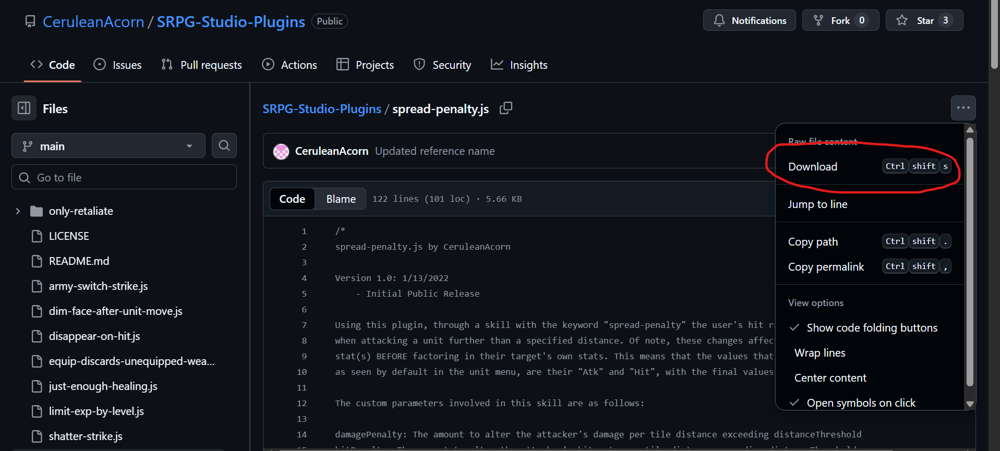

Plugins are JavaScript files containing code that can be inserted into the “Plugin” folder in an SRPG Studio project to modify gameplay for that project.
If you take a look at an SRPG Studio project’s “Script” folder, you can see collections of JavaScript files controlling how gameplay works by default, organized into different subfolders based on the different parts of the SRPG Studio game engine those files are responsible for handling. This default functionality is often referred to as "vanilla" within the SRPG Studio University Discord.
Plugins, then, cause a project to work differently from vanilla by overriding any of the appropriate functions defined in the “Script” folder’s JavaScript files, to declare a different implementation of those functions.
As mentioned above, Plugins can be downloaded and put in the “Plugin” folder of an SRPG Studio project. Most plugins should be “plug and play”, meaning that’s all you are required to do from outside the SRPG Studio game engine to begin using them.
Some plugins may have variables you may or may not define inside the SRPG Studio engine to customize the way the plugin works, called “custom parameters”. This is on a case-by-case basis, so it is recommended that you use an IDE (Notepad++ is what I personally use for developing in SRPG Studio. A big advantage for Notepad++ is that if you’re using Japanese plugins, they may appear as incomprehensible text when first opened due to their UTF-8-BOM, which Notepad++ can convert into characters you can then read using the built-in UTF-8 encoding setting) or at least a text editor to open the plugins you want to use and read their instructions.
Let’s use my Spread Penalty plugin. Download it and place it in your SRPG Studio project’s “Plugin” folder.
Some plugins may have variables you can define inside the SRPG Studio engine to customize the way the plugin works, called “custom parameters”. This is on a case-by-case basis, so I recommend that you use an IDE (Notepad++ is what I use for developing for SRPG Studio. If you open a plugin that seems unreadable, it may be encoded in UTF-8-BOM, which Notepad++ can convert to UTF-8 so you can understand it) or at least a basic text editor to open the plugins you want to use and read their instructions.
This custom skill can be implemented from the main screen of SRPG Studio by going into Database > Skills, then setting the Skill Type of the skill you want to associate with the plugin to “Custom”.
You’ll notice that within the “Skill Effect” text entry window, there is space for a “keyword”. This keyword is what links the plugin to the custom skill you are creating - if a keyword is needed for a plugin, it should ideally be defined within the JavaScript file in a section, but just in case it isn’t, look for a line that includes “SkillControl.getPossessionCustomSkill”. It should have the keyword required, wrapped in double quotations.
This line of code is from the Spread Penalty plugin; the keyword is “spread-penalty”.
With your new skill set up like so, give it to a unit and you’re good to go!
You’ll likely come across a lot of plugins like Spread Penalty that have variables called “custom parameters” - Spread Penalty has three for example - that can be modified to change the way they plugin works, but often have default values assigned to them - so those plugins, like Spread Penalty, can be considered plug and play because you don’t necessarily have to define them. Open the JavaScript files for your plugins and read the instructions for each case-by-case basis!
For Spread Penalty, the default custom parameter values translate to a skill that imposes a -25% damage and -10 hit rate penalty if the unit attacks from 2 tiles away.
By extension, if attacking from 3 tiles, the penalty is -50% to damage and -20 to hit rate.
If attacking from 4 tiles, the penalty is 75% to damage and -30 to hit rate, and so on and so forth.
Define custom parameters you want to change by clicking on the “Custom Parameters” button for corresponding skill, then typing them in the window that appears.